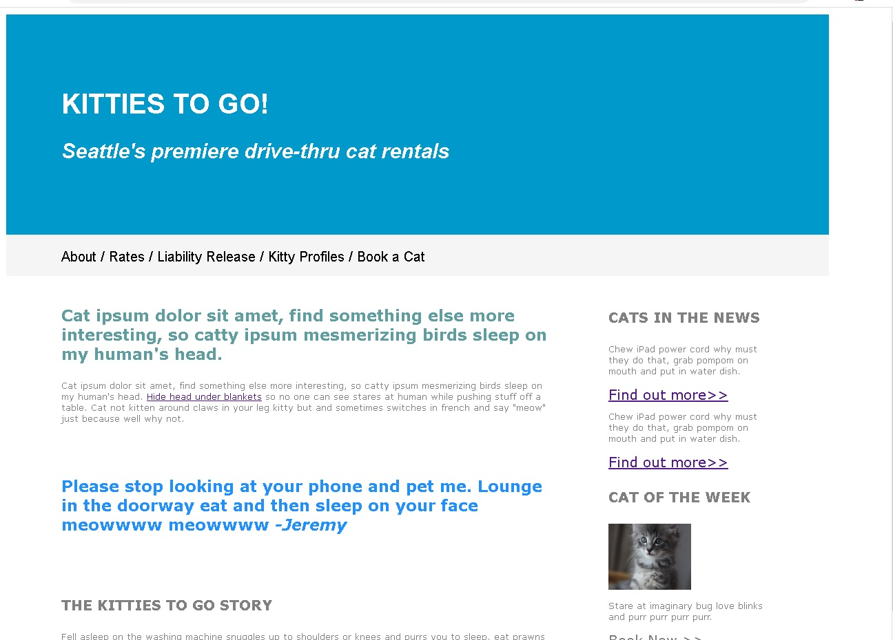
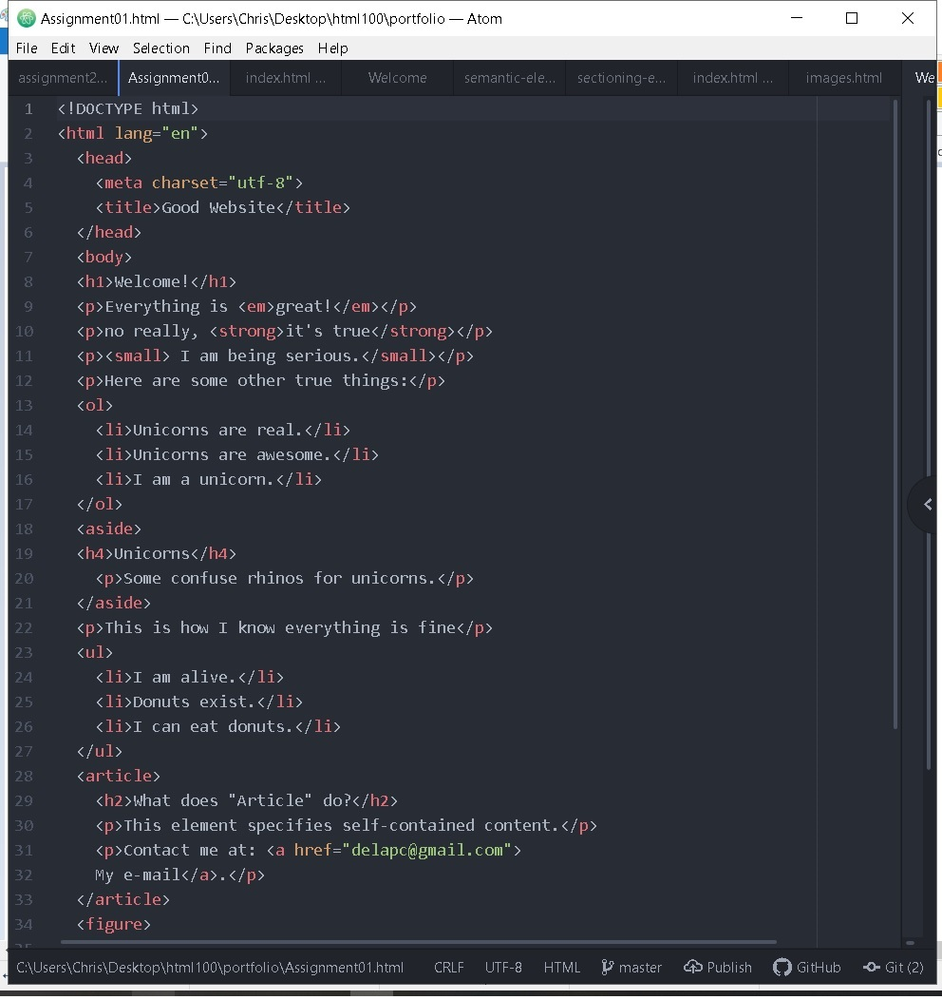
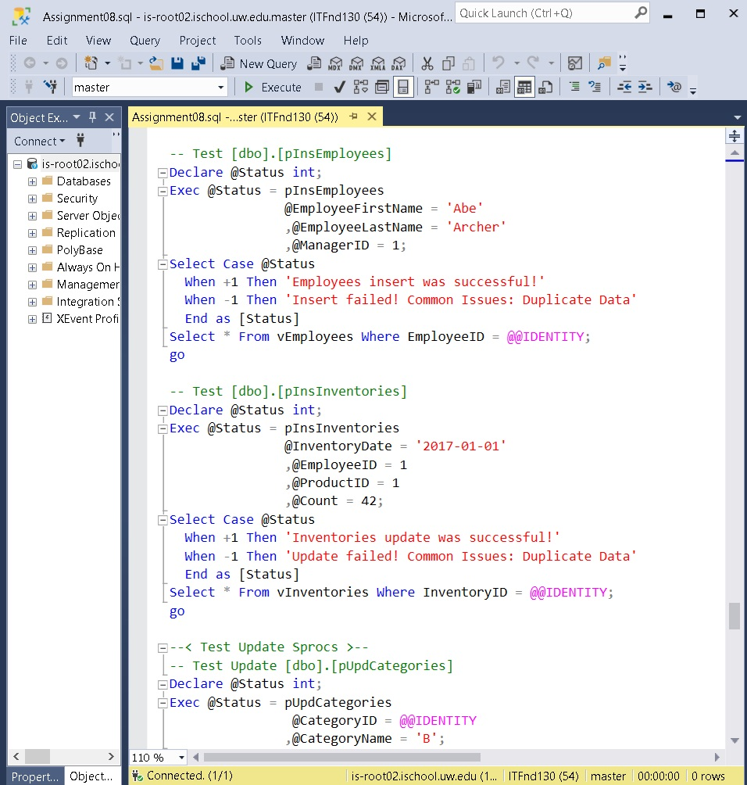

Welcome to My Projects Page!
This is a list of projects and other items that I've worked on.
2/23/20: HTML200 (Javascript and Responsive Web Design) Assignment 6
The following is a link to my Adopt-a-dog website, including media queries per assignment 6.
Adopt-a-dog website
2/21/20: HTML200 (Javascript and Responsive Web Design) Assignment 5
The following are links to Javascript files created for assignment 5.
Assignment 5
Javascript file
1/20/20: HTML200 (Javascript and Responsive Web Design) Assignment 1
The following is a link to the Adopt-a-dog website (HTML only).
Adopt-a-dog website.
12/31/19: Straight to the Point website (html and css)
The following is the deliverable for UW HTML 100 assignment 8, incorporating CSS grids and CSS styling.
Straight to the Point website
12/26/19: CSS transitions and nth-child selectors.
The following list is a dozen of my all-time favorite books. Hover over them
to view CSS transitions.
- Getting More: How You Can Negotiate to Succeed in Work and Life by Stuart Diamond
- Decisive: How to Make Better Choices in Life and Work by Chip and Dan Heath
- Crucial Conversations: Tools for Talking When Stakes are High by Kerry Patterson
- Extreme Ownership by Jocko Willink and Leif Babin
- The Ultimate Brian Tracy Library by Brian Tracy
- Influence: The Psychology of Persuasion by Robert B. Cialdini
- David and Goliath by Malcolm Gladwell
- You Already Know How to be Great by Alan Fine
- Rich Dad, Poor Dad by Robert Kiyosaki
- Catch 22 by Joseph Heller
- The Great Gatsby by F. Scott Fitzgerald
- The Fountainhead by Ayn Rand
12/25/19: Kitties To Go website , this time with flexbox.
Created another frontpage for Kitties-to-go with flexbox incorporated as
part of HTML100 assignment 5.
Link to Kitties-To-Go website (revised)
12/24/19: Kitties To Go website
Created a website for a kitty rental service as part of UW HTML 100 Assignment 4.
Link to Kitties-To-Go website

Lesson 1 Assignment
My 1st assignment for HTML 100
Kind of basic, but that's ok it's my 1st assignment
Link to assignment 1

IT FDN 130 Assignment 8
This is an assignment from Database foundations, also taught at UW.
This assignment was centered on creating stored procedures.
Link to the sql file

Okay, not a whole lot of projects, but I'm just getting started!
The following are a list of projects I'd like to do!
Airplane repair instructions generator.
This project would do the following:
- Let the user select the type of airplane damage they have from a list.
- Allow the user to input the characteristics of the damage.
- Generate formatted repair instructions from a menu pre-approved by engineering.
Link to (still imaginary) project!
 "LN-NOB 220709"
by airlines470
is licensed under
CC BY-SA 2.0
"LN-NOB 220709"
by airlines470
is licensed under
CC BY-SA 2.0
Here's a list of other projects I'd like to complete someday:
- Create an anonymous "user feedback" for my team. Link here.
- Complete the UW Certificate of Front-End Development. Link here.
- Write a program using Python. Link here.